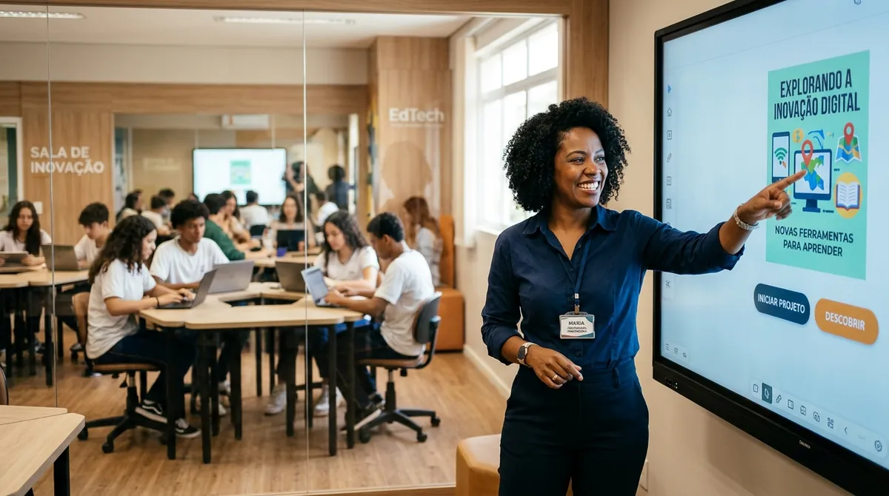

BNCC Computação nas Ciências da Natureza: Por Onde Começar sem Sobregar a Rotina Docente

Neste texto
- Compreendendo os Três Eixos da BNCC Computação no Contexto Investigativo
- 1. Pensamento Computacional
- 2. Mundo Digital
- 3. Cultura Digital
- Conexões Práticas entre Computação e Ciências da Natureza
- O Erro do Senso Comum no Ensino das Ciências Computacionais
- O Papel Transformador dos Recursos Educacionais Abertos (REA)
- Fortaleça sua Prática com Nossos REAs e Consultoria Especializada
- Referências
A homologação do Parecer CNE/CP nº 2/2022 marcou um divisor de águas na Educação Básica brasileira ao incluir as normas sobre Computação na Educação Básica como um complemento essencial à Base Nacional Comum Curricular (BRASIL, 2022). Para os professores que já lidam com jornadas extensas, turmas heterogêneas e escassez de recursos, a exigência de integrar lógica, algoritmos e cultura digital parece, à primeira vista, mais um fardo burocrático. No entanto, quando despida de modismos e abordada sob a perspectiva das Ciências da Natureza, a BNCC Computação revela-se uma poderosa aliada para ressignificar o ensino investigativo.
O grande desafio enfrentado por docentes e estagiários de licenciaturas é a falta de pontes metodológicas claras entre a teoria da computação e a prática de sala de aula. Como ensinar raciocínio computacional em aulas de Biologia, Física ou Química sem transformar a disciplina em uma aula de programação instrumental? A resposta está na adoção da intencionalidade pedagógica transdisciplinar e no uso estratégico de Recursos Educacionais Abertos (REA).
Compreendendo os Três Eixos da BNCC Computação no Contexto Investigativo
A BNCC da Computação organiza o desenvolvimento de competências digitais em três eixos estruturantes que se interconectam com os objetivos de aprendizagem das Ciências da Natureza. Compreender essa arquitetura é o primeiro passo para planejar aulas sem reinventar a roda:
1. Pensamento Computacional
Não se trata do uso de computadores, mas da capacidade humana de formular problemas e suas soluções de modo que as respostas possam ser representadas por agentes de processamento de informações (WING, 2006). Envolve quatro pilares fundamentais: decomposição (dividir problemas complexos em partes menores), reconhecimento de padrões (identificar regularidades em fenômenos), abstração (filtrar o essencial e ignorar detalhes irrelevantes) e algoritmos (construir sequências de passos lógicos para a resolução).
Nas Ciências da Natureza, o pensamento computacional já faz parte da investigação científica clássica. Quando um estudante constrói o fluxograma de uma cadeia alimentar, modela a fotossíntese ou estabelece a rotina experimental para uma análise química, ele está exercitando pilares computacionais de forma orgânica.
2. Mundo Digital
Este eixo refere-se à compreensão dos artefatos físicos e virtuais, entendendo como a informação é codificada, armazenada, processada e transmitida através de redes e dispositivos. Em Biologia e Física, por exemplo, o eixo Mundo Digital permite explorar desde a física dos sensores utilizados em estações meteorológicas até a representação binária de sequências de DNA e bancos de dados genômicos abertos.
3. Cultura Digital
O terceiro eixo foca nos impactos da tecnologia na sociedade, promovendo a fruição, a reflexão ética, a segurança e a responsabilidade no uso e produção de mídias e ferramentas digitais. Diante da vigência da Lei nº 15.211/2025 (ECA Digital), este eixo torna-se crucial para ensinar a privacidade de dados, o combate à desinformação científica e o respeito aos direitos autorais e licenças abertas (BRASIL, 2025).
Conexões Práticas entre Computação e Ciências da Natureza
Para visualizar como essa convergência ocorre sem sobrecarregar seu plano de aula, examine a matriz de integração prática a seguir:
| Eixo da BNCC Computação | Objeto de Conhecimento em Ciências | Atividade Prática Integrada | Competência Desenvolvida |
|---|---|---|---|
| Pensamento Computacional | Ciclos Biogeoquímicos | Criação de algoritmos "desconectados" (em papel) para mapear o fluxo de carbono e nitrogênio em um ecossistema. | Decomposição e Algoritmos |
| Mundo Digital | Ecologia e Mudanças Climáticas | Coleta de dados ambientais locais e representação gráfica por meio de planilhas de dados abertos. | Abstração e Representação de Dados |
| Cultura Digital | Saúde Pública e Vacinação | Análise crítica de notícias falsas (fake news) sobre imunização e checagem de evidências em bases públicas de dados. | Cidadania Digital e Análise Crítica |
O Erro do Senso Comum no Ensino das Ciências Computacionais
Um equívoco recorrente no ambiente escolar é associar a BNCC da Computação exclusivamente ao ensino de linguagens de programação complexas ou à aquisição de robôs educacionais caros. Essa visão distorcida gera ansiedade docente e aprofunda a desigualdade entre escolas públicas e privadas.
Estudos sobre tecnologia educacional mostram que atividades "desplugadas" (unplugged) possuem a mesma eficácia pedagógica na consolidação de esquemas lógicos e estruturais de pensamento do que atividades mediadas por telas (BELL et al., 2012). A renovação do processo de ensino-aprendizagem não reside na tecnologia em si, mas na intencionalidade pedagógica com a qual o professor media a investigação.
Quando integramos a abordagem STHEAM (Ciência, Tecnologia, Humanidades, Engenharia, Artes e Matemática), a tecnologia deixa de ser um fim instrumental e passa a ser uma ferramenta humanizada de leitura de mundo. O "H" de Humanidades garante que a construção de um algoritmo ou o uso de uma simulação digital considere dilemas éticos, impactos socioambientais e a diversidade cultural do território escolar.
👉 Conheça mais a Jornada STREAM
O Papel Transformador dos Recursos Educacionais Abertos (REA)
Planejar aulas transdisciplinares que unam Ciências e Computação exige tempo — o bem mais precioso e escasso na vida de um professor. É exatamente aqui que os Recursos Educacionais Abertos (REA) se tornam indispensáveis.
REAs são materiais de ensino, aprendizagem e pesquisa fixados em qualquer suporte ou mídia, que se encontram sob domínio público ou licenciados de forma aberta (como a licença Creative Commons), permitindo que sejam acessados, reutilizados, adaptados e redistribuídos gratuitamente por terceiros (UNESCO, 2019).
Ao utilizar um REA estruturado — como uma sequência didática pronta para o ensino do Sistema Circulatório integrada ao Pensamento Computacional — o professor reduz o tempo de preparação de aula e ganha um material validado, flexível e totalmente adaptável às necessidades da sua turma, inclusive de estudantes neurodivergentes e/ou com comorbidades.
Fortaleça sua Prática com Nossos REAs e Consultoria Especializada
Na Bio+Tech EduDesign, acreditamos que o professor não deve caminhar sozinho no desafio de implementar as diretrizes curriculares nacionais. Desenvolvemos soluções educacionais abertas e serviços sob medida para transformar sua sala de aula:
- Baixe Nosso Catálogo de REAs Gratuitos: Acesse sequências didáticas, guias de atividades desconectadas e planos de aula prontos e alinhados à BNCC e BNCC da Computação para as Ciências da Natureza.
- Consultoria em Design de REA e Formação Docente: Oferecemos mentoria e consultoria para redes de ensino, escolas e grupos de professores que desejam desenhar seus próprios materiais pedagógicos abertos, acessíveis e alinhados às metodologias ativas e à abordagem STHEAM.
👉 Acesse o Repositório de REAs da Bio+Tech EduDesign e baixe seu primeiro kit de atividades
👉 Precisa de apoio para sua escola ou projeto de extensão? Agende uma conversa com nossa equipe de consultoria em Design Instrucional Acessível e REA
Referências
BELL, Tim et al. Computer Science Unplugged: Ensinando Ciência da Computação sem o uso do computador. Tradução de Luciana A. F. Martim. Christchurch: CS Unplugged, 2012.
BRASIL. Lei nº 15.211, de 17 de setembro de 2025. Dispõe sobre a proteção de crianças e adolescentes em ambientes digitais (Estatuto Digital da Criança e do Adolescente). Brasília, DF: Presidência da República, 2025.
BRASIL. Ministério da Educação. Conselho Nacional de Educação. Parecer CNE/CP nº 2/2022. Normas sobre Computação na Educação Básica – Complemento à BNCC. Brasília, DF: MEC/CNE, 2022.
UNESCO. Recommendation on Open Educational Resources (OER). Paris: UNESCO, 2019. Disponível em: https://www.unesco.org/en/legal-affairs/recommendation-open-educational-resources-oer. Acesso em: 30 out. 2026.
WING, Jeannette M. Computational thinking. Communications of the ACM, v. 49, n. 3, p. 33-35, 2006.
Comentários
Verificando configuração dos comentários…